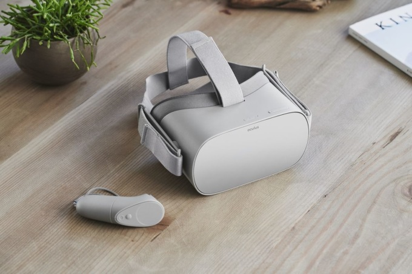
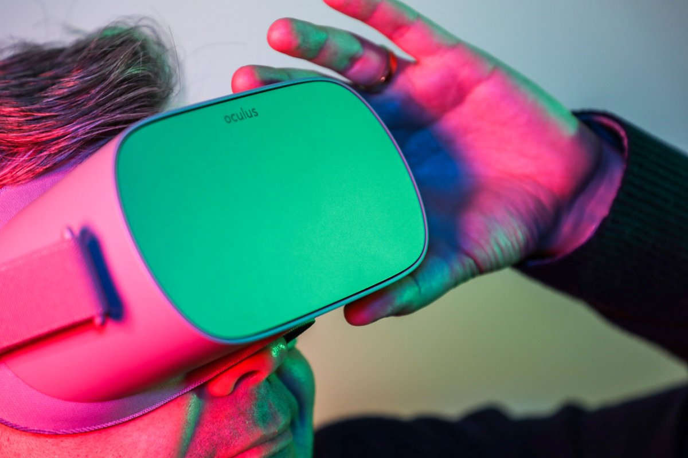

Стоимость выпущенного совместно с Xiaomi шлема — $199.
На ежегодной конференции для разработчиков f8 глава Facebook Марк Цукерберг объявил о начале продаж шлема виртуальной реальности Oculus Go. Устройство поступило в продажу в 23 странах, включая США, Великобританию, Австралию, Финляндию, Норвегию, Данию и Швецию, по цене от $199. В России купить шлем нельзя.
Oculus Go — это автономный шлем, разработанный компанией совместно с китайским производителем Xiaomi. Для его работы не нужны провода, специальные сенсоры, смартфон или компьютер.
Разрешение экрана шлема составляет 2560 × 1440 точек. Объём оперативной памяти — 3 ГБ, объём памяти — 32 ГБ. Компания также предлагает модель с 64 ГБ памяти — за $249. Вес устройства составляет 470 граммов, оно работает под управлением операционной системы Android 7.1.
Ссылка на источник: статья на VC.RU